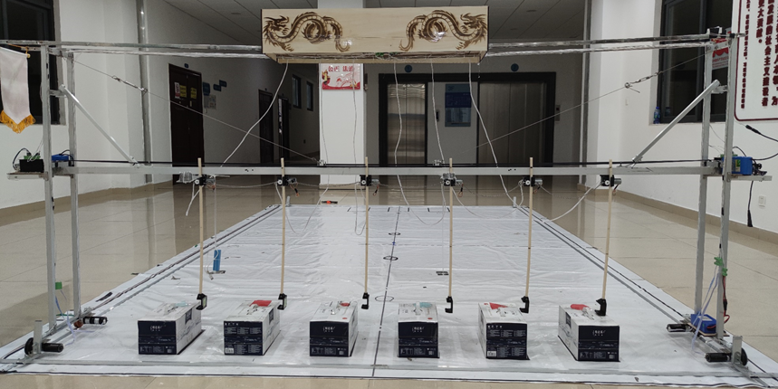

Intelligent Crane Robot based on Image Recognition
Project Source
Xingke Yang and his teammates participated in the biennial "Logistics Technology (Crane) Creative Competition of Chinese College Students" in 2021. Based on the requirements of the competition task, they invented an intelligent crane robot.
Project Description
Utilizing intelligent image recognition and control algorithms, together with the design of a bridge-type working structure, the crane can recognize six milk crates placed in random order with different markings (triangles, squares, and circles in blue/red respectively) within the task area. Through the prescribed obstacle route, it will transport all of the milk crates to the placement area and stack them neatly in the prescribed placement order (two layers in the order of triangles, squares, and circles, with red on top and blue on the bottom).
Project Work Structure
■Target Recognition and Grayscale Sensor Settings- Utilized a smart camera to take pictures of 6 signs under different angles and light to form a data set and imported the CNN-trained network into the camera.
- Connected the two cameras to the Arduino main control board and performed the camera image recognition and returned the recognition result to the main control board.
- Improved the accuracy of operation by placing black tape marks on the hook and box positions.
- Utilized the timer to query the return value of the 5-way grayscale sensor and generated an interrupt signal for the black mark.
■Motor Control
- Calculated the number of square waves and rotated the pulse drive motor by a fixed angle through a cycle to control the left and right movement of the 6 boxes.
- Utilized open-loop control to drive the box to move up and down and reduced the error caused by open-loop control by slowing down the speed of the DC motor and controlling the initial height.
- Controlled the four motor signal interfaces of the driver board by generating PWM waves with different duty ratios and adjusted the PWM of the square wave signal in combination with the feedback signal.
- Utilized the interrupt count to count the rising edge of the feedback square wave to obtain the current running speed of the wheel and adjusted the wheel speed by an incremental PID control algorithm.
■Shortest Path Calculation
- Placed the 6 boxes to the placement position through three 1×6 arrays.
- Calculated the number of moving steps required to place the box and stored the corresponding position of the first array.
- Read the number of steps in the second array and the box number corresponding to the number of steps in the third array and drive the motor of the corresponding box to put down the box.
Project Result
- The identification effect of the target is more than 99% accurate. For the movement in the front and rear, left and right, and up and down directions, the error distances are 1cm, 1.5cm and 0.1cm respectively.
- For the falling effect, since the hook rack is not a rigid body, there is shaking during the lowering process, and the shaking error is controlled within 2.5cm to ensure that it can be accurately placed in the effective area.
- The calculation accuracy of the minimum distance algorithm is high. Under each random order, six boxes can be correctly stacked according to the minimum distance, and the task of moving the boxes can be completed in 57s, which is far less than the specified time of 4min.